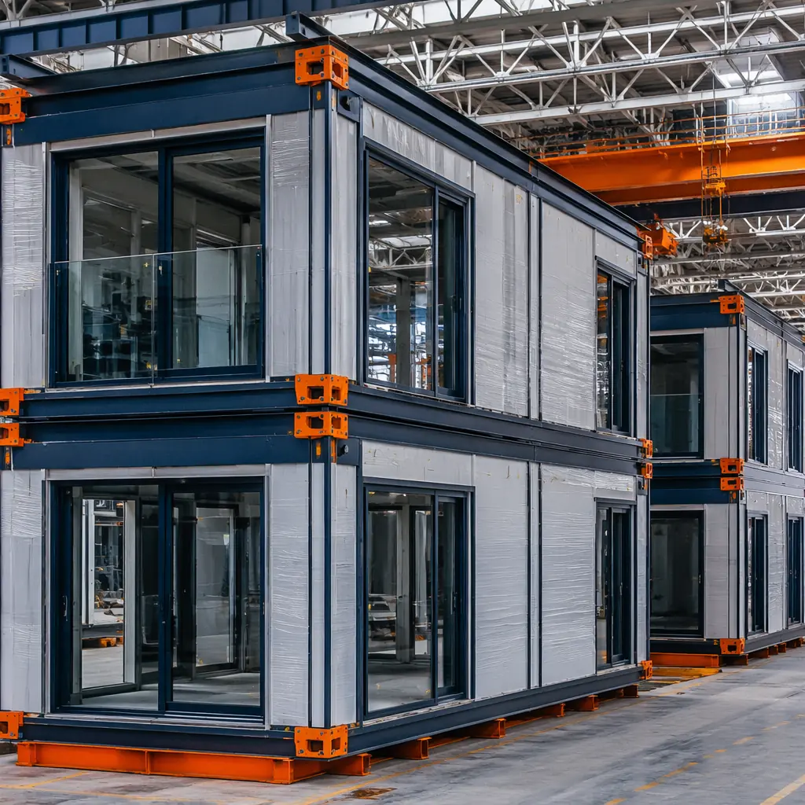
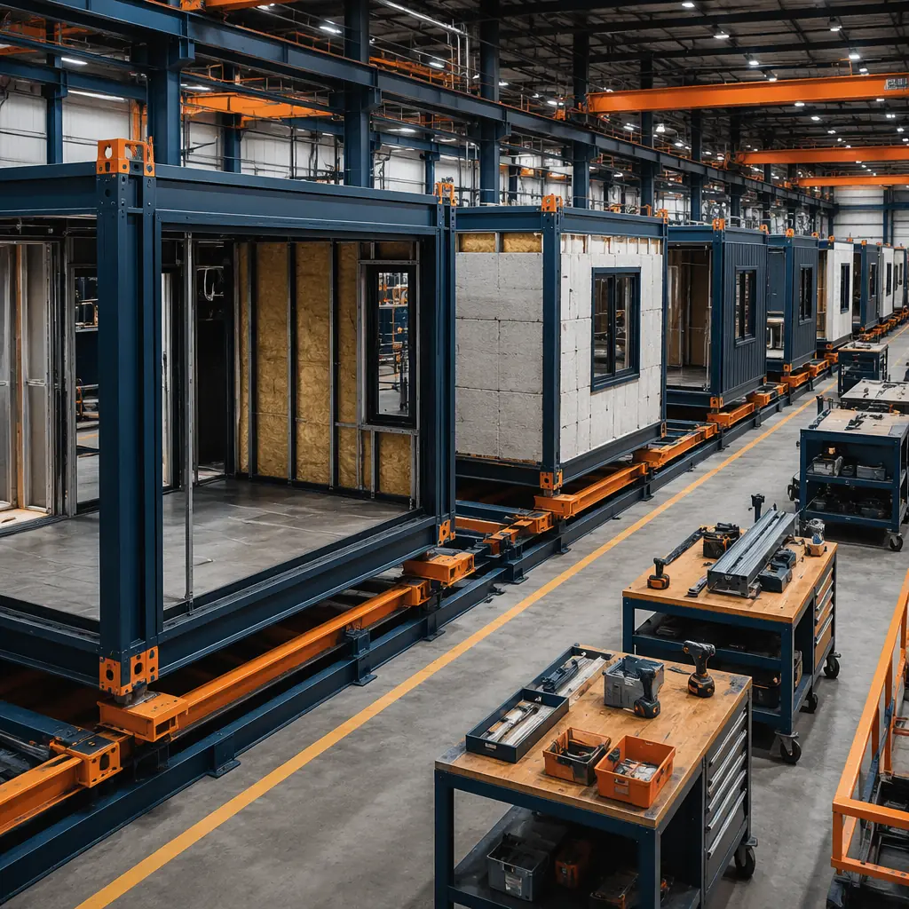
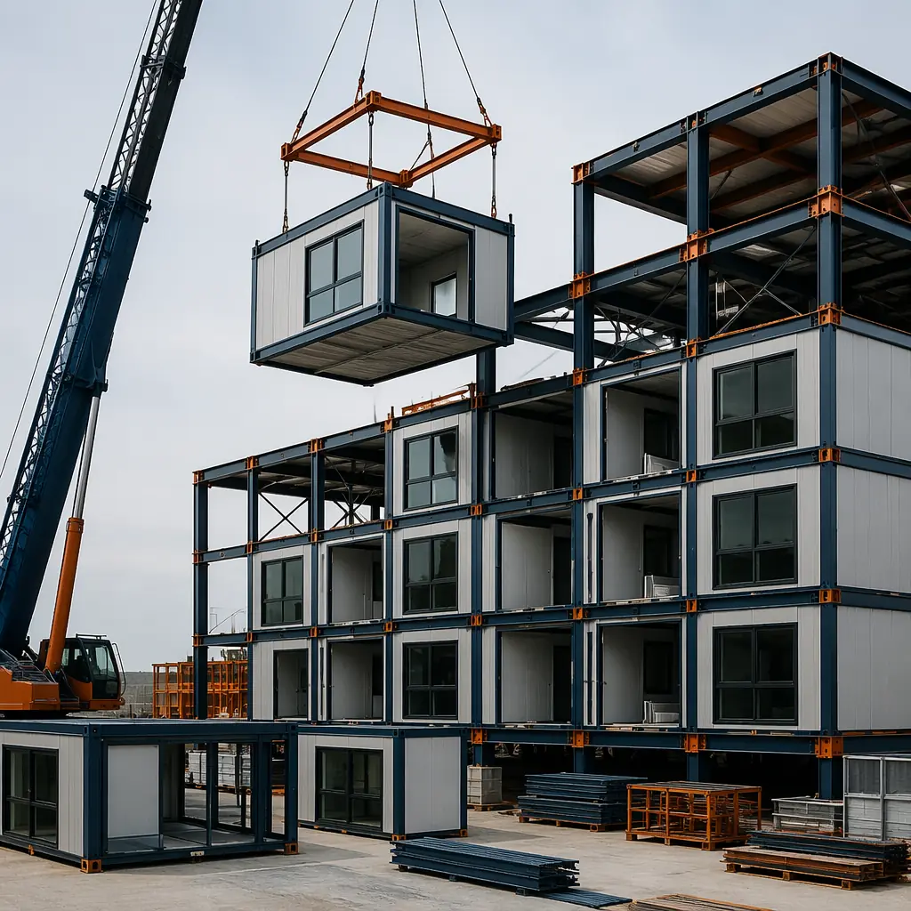
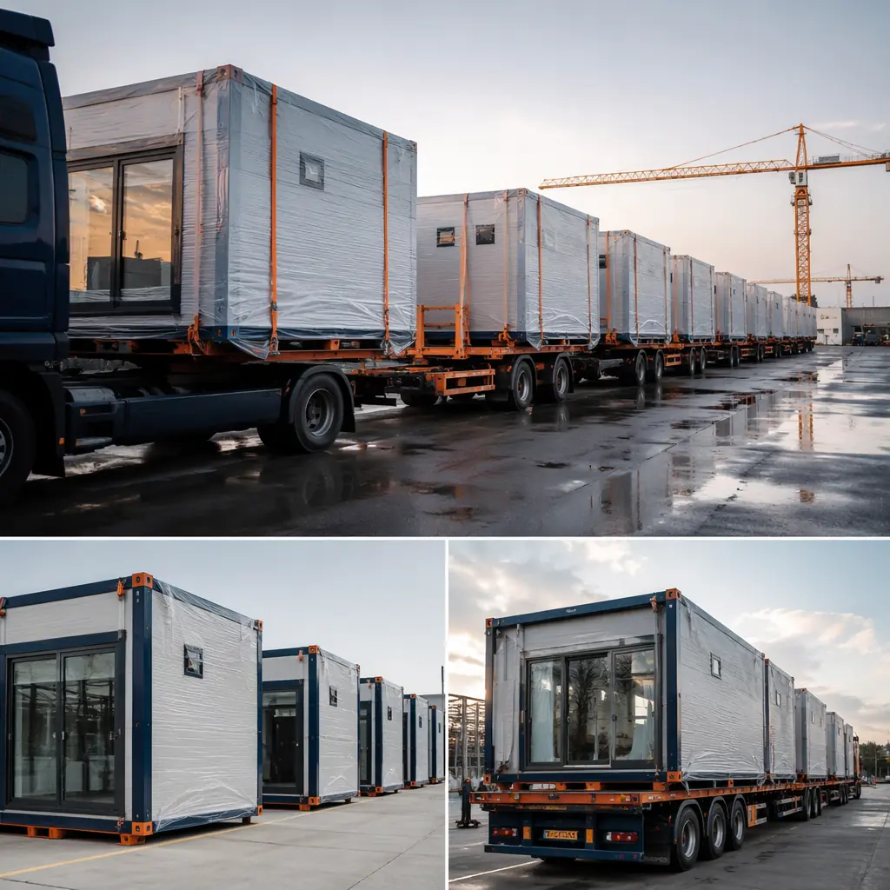
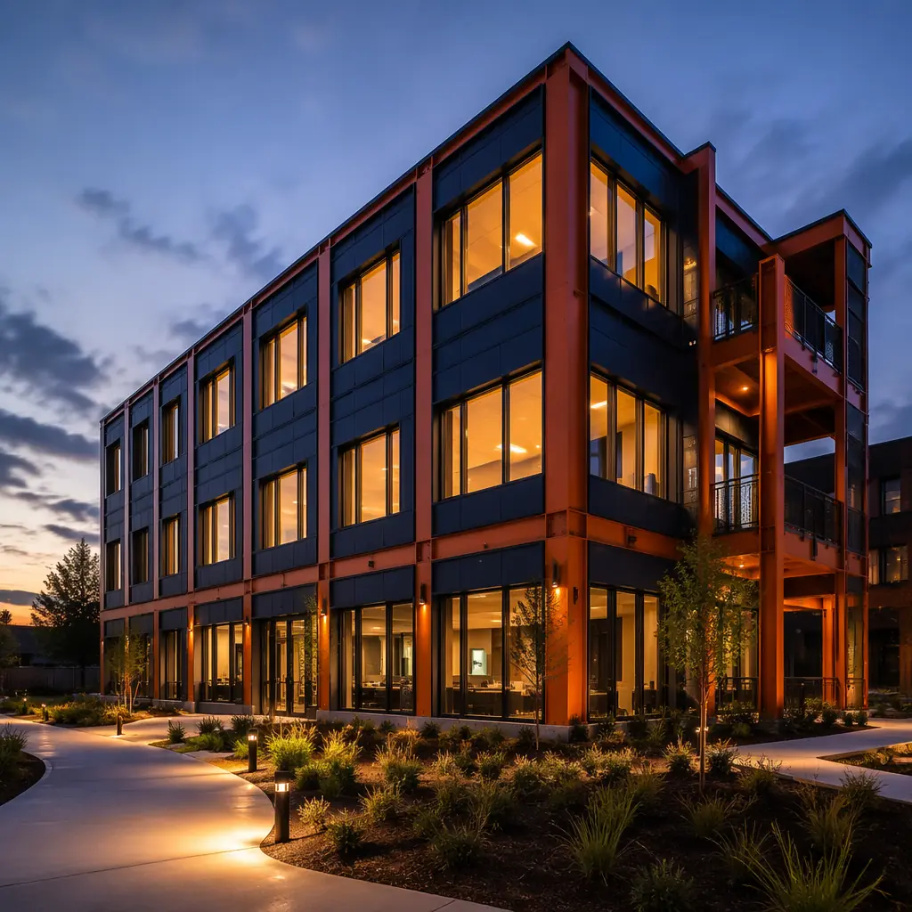

Insurance is the line item that most developers budget but few understand. For a mid-rise commercial project, builder's risk, general liability, and property coverage can total 2–4% of hard construction costs — $200,000 to $600,000 on a $15 million build. Yet the method of construction — modular versus traditional — is rarely discussed with the broker. That silence is expensive. Factory-built modular projects systematically reduce the risks that drive insurance premiums: shorter site exposure, fewer weather-related losses, a controlled manufacturing environment with documented quality records, and a compressed construction timeline that limits the window of insurable exposure. This article explains exactly how modular construction changes the risk calculus — and what developers should ask their broker when insuring a prefabricated project.

Builder's Risk Insurance — Why a Shorter Site Timeline Matters More Than You Think
Builder's risk insurance — also called course of construction insurance — covers physical loss or damage to the building during construction. The premium is driven primarily by three factors: the total insured value, the project duration, and the perceived risk of the construction method. Traditional site-built projects carry builder's risk for 14–24 months for a mid-rise structure; modular projects compress that window to 6–12 months of on-site activity, with modules arriving 70–90% complete from the factory.
The timeline compression is not just a convenience — it directly reduces premiums in two ways. First, a shorter coverage period means fewer months of premium: a 10-month modular build versus an 18-month traditional build saves 8 months of builder's risk premium at roughly $8,000–$12,000 per month for a $10 million project — a $64,000–$96,000 saving on builder's risk alone. Second, and less obviously, the reduced site duration lowers the exposure to the two largest sources of builder's risk claims: weather events and theft. According to industry data from the Insurance Services Office, water damage (rain, flood, freeze) accounts for 32% of builder's risk claims by value, and theft accounts for 21%. A project that spends 40% less time exposed to the elements, with modules stored in a secure factory rather than an open construction site, presents a fundamentally lower risk profile — and underwriters price accordingly.
There is a nuance that developers often miss: builder's risk typically covers modules during transit from factory to site and during the crane-setting process. The key is confirming that your policy includes off-site storage and transit coverage — sometimes called inland marine extension — and that the limit is adequate for the value of modules in transit at any given time. For a logistics-optimized modular project, modules ship in batches of 4–8 units per week rather than sitting on-site for months; the maximum exposure at any moment is lower than the total project value. This batch-based logistics pattern — standard in modular delivery — is a structural advantage that a good broker can use to negotiate lower transit coverage limits and correspondingly lower premiums.

Factory Quality Control — The Risk Mitigation That Insurers Actually Care About
Insurance underwriters assess risk by looking for patterns. On a traditional construction site, quality is variable — dependent on weather, subcontractor availability, and the individual skill of each crew. On a modular factory floor, quality is systematic: every module goes through the same stations, the same inspections, the same tolerances. This repeatability is the single most underappreciated insurance advantage of modular construction.
Consider the specific inspection points that distinguish modular factory production from site-built construction:
- Third-party in-plant inspections. Modular factories operating under state industrial building codes — which govern the module construction phase — are subject to third-party agency inspections at multiple stages: framing, rough-in (electrical/plumbing/mechanical), insulation, and final finish. Each inspection is documented; each documentation trail becomes evidence of quality control. Site-built projects, by contrast, rely on municipal inspectors who visit intermittently and whose reports are often limited to pass/fail notations. For an insurer evaluating a claim, the factory's inspection record — typically 8–12 documented checkpoints per module — provides a level of defensibility that a site-built project cannot match.
- Climate-controlled assembly. Water damage during construction — from rain entering an unenclosed structure — is the leading cause of builder's risk claims. In modular construction, 70–90% of the building is assembled indoors, under a roof, protected from weather. The modules are wrapped and sealed before leaving the factory. This is not a marginal improvement; it eliminates the most frequent cause of construction-phase loss entirely for the factory portion of the build.
- Standardized materials and methods. Factory production uses the same materials, installed the same way, by the same team, module after module. This eliminates the variability that leads to construction defects — the second-largest category of completed-operations claims. When a plumbing connection fails in a traditional building, the investigation must determine which subcontractor, on which day, under which conditions, made the connection. In a modular building, the answer is documented: Module C-7, plumbing rough-in completed on March 14, 2026, by Technician #42, inspected by Agency ABC, with digital photos of the pressure test. For insurers and their subrogation attorneys, this traceability is worth a significant premium discount.
A broker once told us: the best claim is the one you can document never happened. Modular construction provides exactly that documentation — not because the factory never has defects, but because the factory records every step, every inspection, and every correction. Traditional construction's documentation gap is an insurance cost that developers pay whether they realize it or not.
| Risk Factor | Traditional Site-Built | Modular Factory-Built | Insurance Impact |
|---|---|---|---|
| Weather exposure during construction | 12–18 months exposed | 3–6 months exposed (modules indoors) | 30–50% fewer water claims |
| Theft/vandalism exposure | Open site, materials accessible | Secured factory, modules delivered just-in-time | Significantly reduced theft risk |
| Workmanship variability | High — multiple trades, weather-dependent | Low — repeatable process, documented QA | Fewer defect claims, lower defense costs |
| Construction duration | 14–24 months | 8–14 months (total) | 30–40% shorter coverage period |
| Inspection documentation | Municipal pass/fail, intermittent | Third-party agency, 8–12 checkpoints/module, digital records | Stronger subrogation position |
Completed Operations and General Liability — The Long-Tail Risk
Builder's risk ends when the project receives its certificate of occupancy, but general liability and completed-operations coverage extend for years afterward — typically through a 10-year statute of repose for construction defects in most jurisdictions. For developers who hold properties long-term, the quality of construction determines not just the initial insurance cost but the long-tail liability exposure.
Modular construction reduces completed-operations risk through mechanisms that are structural, not cosmetic. The most significant is the module-to-module connection system. In a traditional building, thousands of field-made connections — stud to plate, joist to beam, pipe to fitting — are made under variable conditions by dozens of different workers. Each connection is a potential failure point and a potential claim. In a modular building, the module-to-module connections are engineered, standardized, and installed by a specialized crew using documented procedures — typically 40–60 connection points per floor rather than thousands of individually-made joints.
The fire safety profile of modular buildings also affects liability premiums. Factory-built modules use fire-rated assemblies that are tested and certified at the production level — not assembled piecemeal on site. Steel-framed modular construction, in particular, benefits from the non-combustible nature of the primary structure. For commercial projects like modular office buildings and multifamily residential, the insurance classification for steel-framed modular often falls into the same category as Type I or Type II non-combustible construction, which carries lower property insurance rates than wood-framed equivalents.
For high-risk occupancies — healthcare facilities, laboratories, and research buildings — modular construction offers an additional advantage: the ability to pre-install and factory-test specialized systems. Medical gas piping, fume hood exhaust, and cleanroom HVAC can be installed, pressure-tested, and certified in the factory, with documentation that travels with the module to the site. This reduces the risk of installation defects that could lead to operational failures and subsequent liability claims — a concern that weighs heavily on institutional owners and their insurers.

Property Insurance Post-Completion — The Modular Building Classification
Once a building is occupied, property insurance premiums are driven by construction type (the ISO classification), fire protection class, and occupancy risk. Modular steel-framed buildings typically qualify for ISO Construction Class 3 (non-combustible) or Class 4 (masonry non-combustible), depending on the cladding and interior finishes. This classification can reduce property premiums by 15–25% compared to wood-framed or ordinary construction (Class 1 or 2), which still dominate large segments of the traditional low-rise and mid-rise market.
The energy performance of modular buildings — documented in our analysis of modular energy efficiency — also carries an indirect insurance benefit. Buildings with lower energy use intensity face reduced risk from HVAC system failures, electrical overloads, and equipment strain, all of which are common precursors to fire and water damage claims. For developers pursuing LEED certification through modular construction, the documentation trail required for green building credits also serves as evidence of quality construction — a virtuous overlap between sustainability compliance and insurance underwriting.
The construction type classification advantage is not automatic — it requires the developer or their broker to present the modular project correctly to underwriters. A modular building that is described generically as "prefabricated construction" may be misclassified. The correct submission should specify: steel-framed modular construction, factory-assembled under third-party inspection, with fire-rated assemblies certified at the module level, and delivered with full QA/QC documentation. MODURA provides a complete construction documentation package — including third-party inspection reports, material certifications, and fire assembly ratings — specifically designed to support insurance underwriting submissions for every project.
Underwriters do not penalize modular construction because they do not understand it — they penalize it because it is filed under the wrong classification. A modular steel building classified as ISO Class 3 with documented QA/QC records will typically receive the same or better rates as a site-built steel building of equivalent use. The difference is in the submission, not the structure.
Practical Steps — What to Ask Your Broker Before You Build Modular
Most commercial insurance brokers have limited experience with modular construction — not because they are resistant, but because modular projects represent a small fraction of total construction volume. The developer who educates their broker early in the process unlocks better coverage terms than the developer who waits until the policy is being bound. Here is a checklist to bring to your next insurance meeting:
- Confirm builder's risk covers off-site storage and transit. Request an inland marine extension or a builder's risk policy that explicitly covers modules while in the factory, during transit, and at the staging yard. The limit should equal the maximum value of modules in transit or storage at any one time — not the total project value, which over-insures and overcharges.
- Request a schedule credit for reduced construction duration. If the modular project is scheduled for 10 months versus an 18-month traditional equivalent, the builder's risk premium should reflect the 8-month reduction. A credit of 30–40% on the duration-based portion of the premium is reasonable and supportable with a project schedule comparison.
- Present the factory QA/QC documentation package. Third-party inspection records, material certifications, fire assembly ratings, and pressure test results. The goal is to demonstrate to the underwriter that this project carries lower workmanship risk than a comparable site-built project. If MODURA is your manufacturer, request our standard insurance submission package — it is prepared specifically for this conversation.
- Request ISO Class 3 or 4 classification for property coverage. Steel-framed modular with non-combustible cladding should qualify. Provide the structural engineer's letter confirming the primary framing material and the fire-rated assembly test reports. Do not let the project be classified as "prefabricated — see notes" or any catch-all category.
- Bundle the entire program. Builder's risk, general liability, property, and inland marine from a single carrier often yields a multi-line discount of 5–10%. A carrier that writes the builder's risk wants to write the property coverage; use that continuity to negotiate.
- Verify that your general liability policy does not have a modular construction exclusion. Some standard GL policies contain exclusions for "manufactured housing" or "factory-built structures" — remnants of legacy concerns about mobile homes that have nothing to do with commercial modular construction. If your policy has this exclusion, have it removed or find a carrier that understands the distinction.

The Bottom Line — Real Numbers from Real Projects
Across MODURA's 500+ completed projects in 18 countries, the insurance cost profile of modular construction follows a consistent pattern. For a representative $12 million, 60,000 sq ft commercial project — comparable to a modular apartment building or mixed-use development — the insurance cost comparison breaks down as follows:
| Insurance Line | Traditional Build (18 months) | Modular Build (10 months) | Savings |
|---|---|---|---|
| Builder's Risk (duration portion) | $144,000–$216,000 | $80,000–$120,000 | $64,000–$96,000 |
| General Liability (annualized) | $35,000–$55,000 | $28,000–$44,000 | $7,000–$11,000 |
| Property (first year, ISO Class 3) | $42,000–$60,000 | $36,000–$51,000 | $6,000–$9,000/yr |
| Total first-cycle savings | — | — | $77,000–$116,000 |
These savings compound when combined with the broader financial advantages of modular construction: the 20–30% construction cost reduction analyzed in our cost per square foot guide, the accelerated revenue from earlier occupancy, and the ROI advantages of shorter construction timelines. Insurance cost reduction is one component of a larger financial case — but for the developer who is already evaluating modular, it is a component that should not be left on the table.
Insurance is ultimately a pricing mechanism for risk. Modular construction reduces the risks that insurers price: shorter site duration, controlled factory conditions, documented quality records, and standardized connection systems. The developer who understands this — and who communicates it effectively to their broker and underwriter — builds a project that is not only faster and more cost-effective, but also fundamentally less risky to insure. In an industry where risk is the product, that is a competitive advantage worth documenting.
